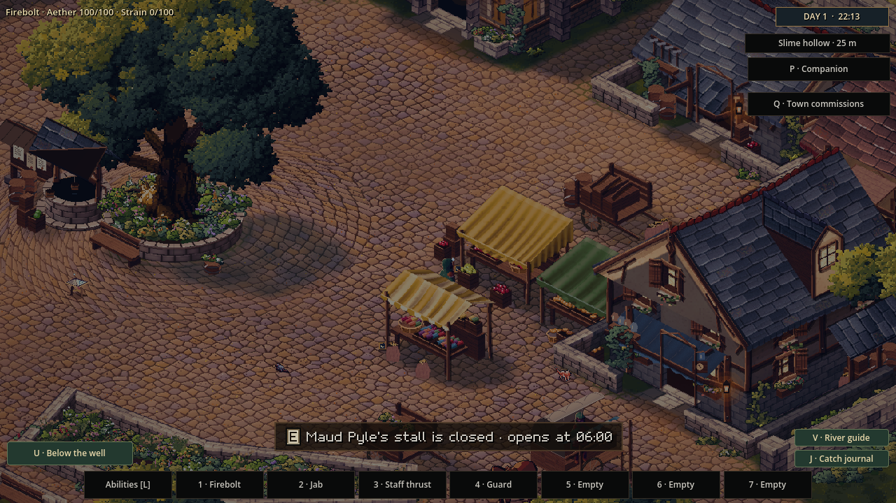
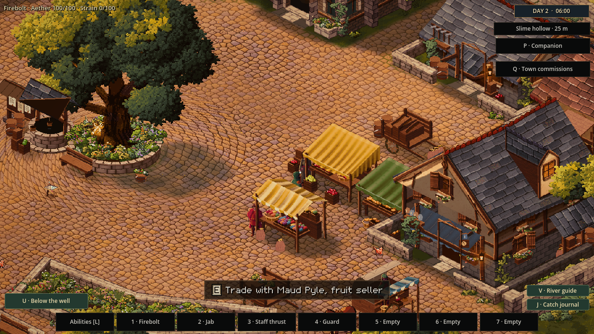

When night falls on the market town
25 October 2026 · Day 34
Oakwell used to blink from the end of the market day straight into morning. Now the town keeps its own hours, and the player can stay out after sunset.
The long way to morning
The town clock no longer skips from dusk to dawn. Afternoon light warms toward evening, then a cool blue settles over the lanes. Deep night holds steady across midnight. As morning approaches, the darkness lifts into a warm sunrise before daylight returns.
A small clock in the corner shows the day and the time. In this town, a full day still passes in four minutes, so evening arrives quickly enough to watch in one visit. Midnight moves the village into its next day while the square remains dark.

The square closes
At dusk, Maud and Edric's fixed counters close and stand empty. A little moon sign marks each closed stall, and a traveller who approaches can see when it will reopen. At dawn, the stalls open again. The travelling pedlar keeps her own route around town.
The town's residents keep their own routines: finishing work, walking home, sleeping and returning to their daytime activities. You can watch those routines continue as the town grows dark.

A town that stays awake with you
Night is part of play now. You can cross the square after closing, watch the lamps come into their own, and see the town begin to wake again at dawn. The clock, the market and the residents all share the same passing hours. The images show a fixed market view at two review times in the game's own renderer.